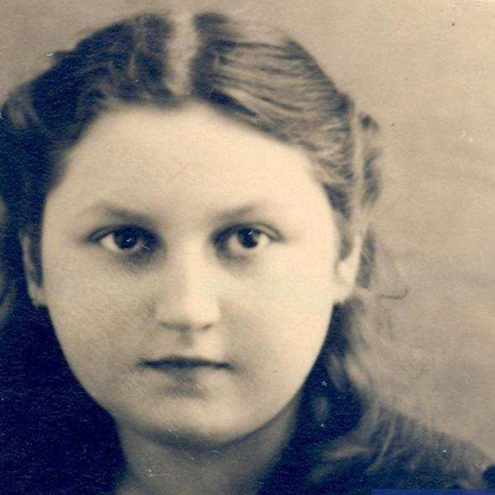

Portrait d’archive
Enfants Namenwirt
Héléne NAMENWIRT
Hélène NAMENWIRT est née le 20/09/1927 à Vogelhut en Belgique.
Rassemblée à Lyon, elle est déportée à Auschwitz le 28/10/1943 par le convoi n°61. Elle est morte en déportation.
Dernière adresse connue : La Plaine d'Alberville (Albertville)
Nom : NAMENWIRT
Prénom(s) : Héléne Chava
Date naissance : 20/09/1927
Âge (ans) : 19
Lieu naissance : Vogelhut
Pays ou département : Belgique
Lieu rassemblement : Lyon
Dernière adresse : ?
Ville : La Plaine d'Alberville
Code postal : Savoie
N° Convoi : 61
Date déportation : 28/10/1943
Informations diverses : déportée avec son père Herman Hersch (06/10/1894, Wisniez) “Directeur de conscience / Père spirituel”, sa mère Riwka Yehudit née Broder (04/1893) et avec sa soeur Eva (28/04/1924, Borgerhout).
NAMENWIRT Hélène né(e) le 20/09/1927 à VOGELHUT déporté(e) par le convoi n° 61 le 28/10/1943 à Auschwitz; JO
NAMENWIRT Riwka né(e) Broder en 1893 à PAGORCZE déporté(e) par le convoi n° 61 le 28/10/1943 à Auschwitz; NAMENWIRT Hersch né(e) le 06/10/1894 à WISNIEZ déporté(e) par le convoi n° 61 le 28/10/1943 à Auschwitz. Sur la liste des personnes enregistrées à la frontière genevoise durant la Deuxième Guerre mondiale (Archives d'Etat de Genève).
Lieu de déportation : Auschwitz
Lieu de départ : Drancy
Nombre total de déporté·e·s du convoi : 1000
Gazé·e·s à l'arrivée : 613 (61,3 %)
Survivant·e·s en 1945 : 42 (4,2 %)
Eva NAMENWIRT
Eva NAMENWIRT est née le 28/04/1924 à Borgerhout en Belgique.
Rassemblée à Lyon, elle est déportée à Auschwitz le 28/10/1943 par le convoi n°61. Elle est morte en déportation.
Dernière adresse connue : La Plaine d'Alberville (Albertville)
Nom : NAMENWIRT
Prénom(s) : Eva
Date naissance : 28/04/1924
Âge (ans) : 16
Lieu naissance : Borgerhout
Pays ou département : Belgique
Lieu rassemblement : Lyon
Dernière adresse : ?
Ville : La Plaine d'Alberville
Code postal : Savoie
N° Convoi : 61
Date déportation : 28/10/1943
Informations diverses : déportée avec son père Herman Hersch Tzvi (06/10/1894, Wisniez) “Directeur de conscience / Père spirituel”, sa mère Riwka Yehudit née Broder (04/1893) et sa soeur Hélène (28/04/1924, Borgerhout).
NAMENWIRT Eva né(e) le 28/04/1924 à Borgerhout déporté(e) par le convoi n° 61 le 28/10/1943 à Auschwitz. JO
NAMENWIRT Riwka né(e) Broder en 1893 à PAGORCZE déporté(e) par le convoi n° 61 le 28/10/1943 à Auschwitz; NAMENWIRT Hersch né(e) le 06/10/1894 à WISNIEZ déporté(e) par le convoi n° 61 le 28/10/1943 à Auschwitz. Sur la liste des personnes enregistrées à la frontière genevoise durant la Deuxième Guerre mondiale (Archives d'Etat de Genève).
Lieu de déportation : Auschwitz
Lieu de départ : Drancy
Nombre total de déporté·e·s du convoi : 1000
Gazé·e·s à l'arrivée : 613 (61,3 %)
Survivant·e·s en 1945 : 42 (4,2 %)